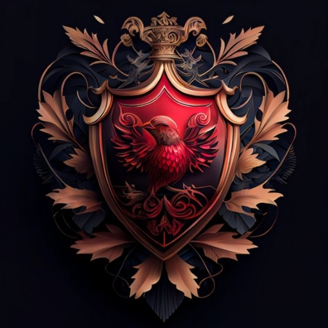

Die Blutjäger
Die Blutjäger sind eine Spezialeinheit der Untoten Legion, bestehend aus untoten Ordnungsbrechern, die im verborgenen Reich von Eosphoros Jenseits operieren.
Zweck & Vorgehen
Ihre primäre Aufgabe ist es, verdüsterte Kreaturen – von Dunkelheit und Verzweiflung Befallene – aufzuspüren und:
- entweder zum Endloch zu bringen (Gerichtsort des Jenseits),
- oder sie endgültig zu vernichten, um das Gleichgewicht wiederherzustellen.
Fähigkeiten & Taktik
- Keine Gnade: Unerschütterlicher Wille und gnadenlose Kampftechniken.
- Gegen Unsterbliche: Spezielle Rituale und Waffen, die selbst göttliche Geschöpfe bezwingen können.
- Schattenoperationen: Sie agieren verborgen, ihre Methoden bleiben ein Geheimnis.
- Gruppendynamik: Immer paarweise unterwegs, um sich im Kampf zu unterstützen.
Organisation & Titel
Jeder Blutjäger hat seinen alten Namen abgelegt. Sie führen nur noch ihren Vornamen und den Titel:
Blutjäger „Vorname“
Ruf & Legenden
Ihre unheimliche Aura und ihre Fähigkeit, über den Tod hinaus zu wirken, machen sie zu einer gefürchteten Fraktion. Für alle, die sich gegen die Ordnung stellen, sind die Blutjäger eine unausweichliche Bedrohung.